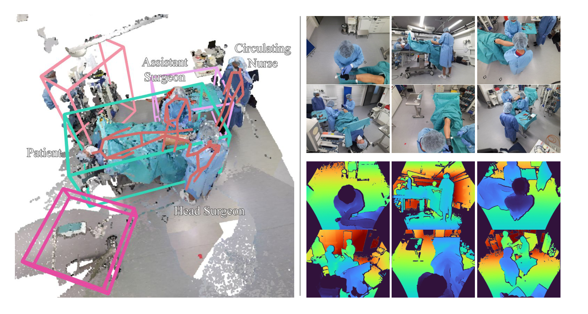
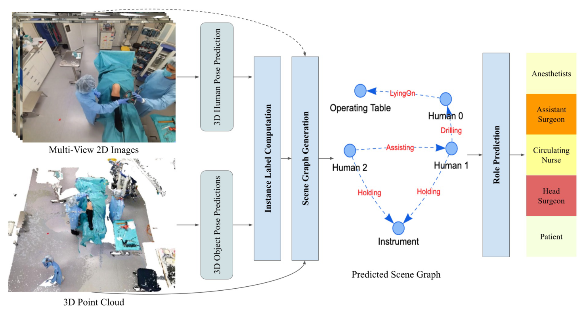
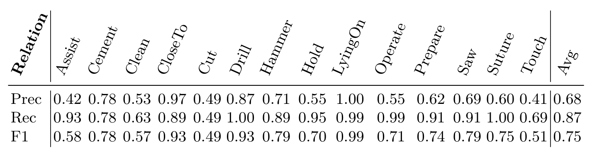
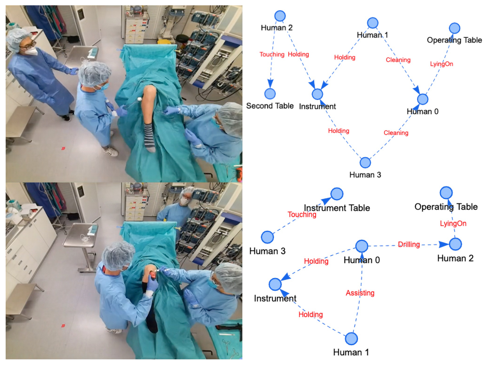
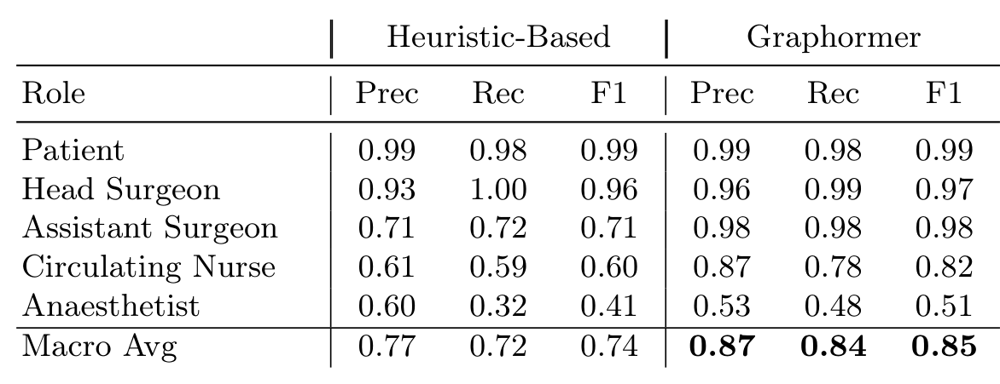

图文解读
1背景与动机
手术室里有多条并行的动作线，现有方法一次只看一条。 阶段识别、器械识别、人体位姿估计各管一块，没有人回答"谁在对谁做什么"。
计算机视觉里有现成的表示：场景图。节点是人和物，边是关系，例如"主刀钻孔患者"。但已有场景图数据集都来自日常场景，交互简单。手术室这边，MVOR 只标了人体位姿，Sharghi 等人的数据只做阶段识别且不公开。
缺的是一个能监督手术室场景图生成的公开数据集。 这就是 4D-OR 要补的。
2核心观点速览
论文的答案分三步：在模拟中心录 10 台全膝关节置换并逐帧标注场景图；在 3DSSG 上加图像分支、点云增强和一个代表小器械的虚拟节点，做出场景图生成基线；再把生成的场景图送进 Graphormer 预测每个人的临床角色。
头条结果： 场景图宏平均 F1 0.75，角色预测 0.85。边界： 只有一种术式、模拟环境、2 台手术做测试，论文未说明方差。
3数据从哪里来
这一节回答：录了什么，标了什么。 10 台模拟全膝关节置换在医学模拟中心按典型流程录制，有医学专家指导。作者选这一术式，是因为它是有代表性的骨科手术，步骤和交互多样。
6 台标定好的 Azure Kinect 装在天花板，1 帧每秒同步输出 RGB 和深度，合计 6734 帧，并提供整场的融合点云。

标注有四类：每个手术步骤的场景图关系；自动标注的人体 6D 位姿；设备的 3D 框；每个人的临床角色（患者、主刀、助手、巡回护士、麻醉师）。
正文缺的细节不少。 物体类别数、每帧三元组数都放在补充材料；场景图标注方式与一致性论文未说明，所以无法估计标签噪声和长尾关系的样本量。参演人数与单台时长论文也未说明。
4基线怎样生成场景图
这一节回答：从图像和点云到一张场景图要经过哪几步。 基线定义了这个数据集的评测协议，所以值得看清。

- 位姿与检测：VoxelPose 从多视角图像估计 3D 人体位姿，Group-Free 从点云检测物体 3D 框。
- 实例标签：按位姿和框给点云中每个点标上属于哪个实例，再加一个虚拟节点 instrument 代表看不清的小器械。
- 关系预测：改造后的 3DSSG 分别编码单个物体点云和物体对点云的并集，拼接 EfficientNet-B5 图像全局特征，经图卷积传播后分类关系。
- 角色预测：把各帧中的人连成轨迹，用 Graphormer 给轨迹打分，再做唯一角色分配。
三处改造各有针对：图像补点云里缺失的小器械和反光物体；随机尺度、位置、朝向、亮度、色调增强模拟衣着和体型差异；crop-to-hand 把点云裁到手附近，用来区分切割、钻孔和锯。
5评测协议
这一节回答：分数怎么算。 关系和角色都用逐类精确率、召回率、F1，再做不加权的宏平均。作者强调宏平均让切割、钻孔这类稀有关系与常见关系同权。
一条关系算正确，要求两个实体都在场景中且关系预测正确。预测实体与真值实体如何匹配，论文未说明，这会影响不同方法之间结果是否可比。
人体位姿用 PCP3D，物体检测用 IoU 阈值下的 AP。
6结果说了什么
前置检测已接近饱和。 人体位姿 PCP3D 71.23，物体检测 AP 在 IoU@25 为 0.9893，在 IoU@50 为 0.9345。这组数字是后面"真值位姿帮助不大"的前提。

宏平均 F1 0.75，被动作类关系拉低。 能从几何关系读出的关系最好：躺在手术台上 0.99，靠近 0.93。需要识别手中器械或手部动作的最差：切割 0.49，触碰 0.51，清洁 0.57。
模型倾向于多报。 宏平均精确率 0.68，召回率 0.87；协助的召回率 0.93 而精确率只有 0.42。平衡损失给稀有关系加权，会推高这类过报。


场景图里带有角色信息。 Graphormer 宏平均 F1 0.85，只数关系频次的启发式 0.74；差距主要在助手（0.98 对 0.71）和巡回护士（0.82 对 0.60）。麻醉师两种方法都差，Graphormer 只有 0.51，作者归因于遮挡。
7消融：两项改造各贡献多少
这一节回答：图像和增强谁在起作用。 表 3 自动裁剪失败，这里按原表重排。
| 实验 | 图像 | 增强 | 真值位姿 | F1 |
|---|---|---|---|---|
| (a) | 否 | 否 | 否 | 0.65 |
| (b) | 是 | 否 | 否 | 0.66 |
| (c) | 否 | 是 | 否 | 0.70 |
| (d) | 是 | 是 | 否 | 0.76 |
| (e) | 是 | 是 | 是 | 0.78 |
只加图像几乎没用，先加增强再加图像才明显。 (a) 到 (b) 只高 0.01，(c) 到 (d) 高 0.06。论文正文说两者都显著提升，这和 (b) 行不一致。我的判断：只有 6 个训练 take 时，不加增强的模型可能已经过拟合，图像特征带不来新信息。论文没有验证这一解释。
真值位姿 (e) 只比预测位姿 (d) 高 0.02，作者据此说方法可以用现成检测器。
另有一处数字不一致：表 1 报告 0.75，而同一配置的 (d) 是 0.76；表 1 标题写线性损失加权，正文写平衡损失。论文没有解释。
8结果没说什么
真值位姿的结论依赖模拟环境。 物体检测 AP@50 已有 0.9345，手术室布局固定、光照稳定。在检测更差的真实手术室里，实例标签的错误会直接传到关系预测，论文没有实验能回答这时差距多大。
角色预测没有证明场景图是必要的。 患者和主刀只看站位和姿态也容易区分。论文没有直接从位姿轨迹预测角色的对照，所以分不开"场景图提供了关键信息"与"位姿已经足够"。
单一术式与 2 台测试手术限制了外推。 模型可能学会这一流程的固定站位和顺序；0.01 到 0.02 量级的差异，在没有方差的情况下不能下结论。
它不测时序推理，也不测器械识别。 基线逐帧独立预测，小器械被合并成一个虚拟节点。
9相对已有数据集新在哪里
| 对象 | 它有什么 | 4D-OR 新增 | 没有超过的地方 |
|---|---|---|---|
| MVOR | 真实手术多视角 RGB-D、人体位姿 | 语义关系、物体 3D 框、临床角色、时间序列 | MVOR 来自真实手术 |
| Sharghi 等人 | 机器人手术、两路 ToF、阶段识别 | 公开、6 路、关系级标注 | 论文未比较规模 |
| 通用场景图数据集 | 大规模日常场景关系 | 手术室、多人复杂交互 | 规模小得多 |
| 3DSSG | 室内 3D 场景图方法 | 图像分支、增强、虚拟器械节点 | 方法主体沿用 3DSSG |
它的位置是手术室场景图这条路线的起点： 新增的是语义关系层，代价是放弃了真实手术数据。
10复现与比较前要核对什么
- 去补充材料确认物体类别与三元组统计，正文没有。
- 自己写清实体匹配规则，否则和别人的数字不可比。
- 报告宏平均的同时给逐类 F1，多次运行给方差。
- 只用 1 帧每秒的帧，不要假设有连续视频帧率的数据。
- arXiv v1 写的是录用后公开，数据以 GitHub 仓库为准。